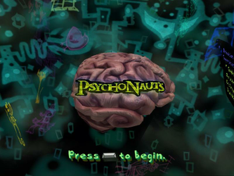
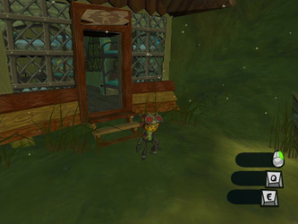
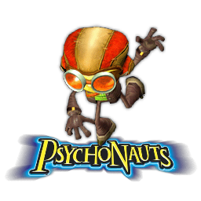

Psychonauts
Dieser Artikel wurde für die folgenden Ubuntu-Versionen getestet:
Ubuntu 14.04 Trusty Tahr
Zum Verständnis dieses Artikels sind folgende Seiten hilfreich:
Psychonauts  ist ein kommerzielles Comic-Action-Adventure aus dem Entwicklerstudio Double Fine Productions rund um Tim Schafer, welcher an Spieltiteln wie Monkey-Island, Day of the Tentacle und Grim Fandango beteiligt war.
ist ein kommerzielles Comic-Action-Adventure aus dem Entwicklerstudio Double Fine Productions rund um Tim Schafer, welcher an Spieltiteln wie Monkey-Island, Day of the Tentacle und Grim Fandango beteiligt war.
Im Spiel übernimmt man die Rolle des jungen Razputin (Raz). Dieser wuchs in einer Zirkusfamilie auf und wird im Sommerlager am Flüsterfelsen, dem "Whispering Rocks Camp", mit anderen Kindern zum Psychonauten ausgebildet. Diese Top-Agenten befinden sich wegen einer Verschwörung in Gefahr...
Die Spielsteuerung kann mit Tastatur, der Maus oder einem Joystick erfolgen.
|  |
| Menü |
|  |
| Spielszene |
Installation¶
The Humble Indie Bundle V¶
Das Spiel aus der Aktion The Humble Indie Bundle V herunterladen und nach ~/Spiele/psychonauts installieren [1] [2]:
./psychonauts-linux-06042012-bin
Nach erfolgreicher Installation ist das Spiel im Menü zu finden.
Ubuntu Software-Center¶
Psychonauts ist über das Software-Center käuflich zu erwerben. Dazu ist eine Registrierung bzw. ein Zugang über Ubuntu One erforderlich, welchen man sich aber auch während des Zahlungsprozesses über das Software-Center anlegen kann. Anschließend wird das Spiel automatisch heruntergeladen und installiert. Für zukünftige Updates wird eine neue Paketquelle hinzugefügt.
Patch¶
Speziell für Linux steht ein Patch zur Verfügung. Diesen lädt man als psychonauts-linux-0.4-patch.tar.bz2  herunter und entpackt [1] diesen ins Installationsverzeichnis. Die Dateien Psychonauts und libSDL-1.2.so.0 überschreiben.
herunter und entpackt [1] diesen ins Installationsverzeichnis. Die Dateien Psychonauts und libSDL-1.2.so.0 überschreiben.
Handbuch¶
Im Installationsverzeichnis liegt ein Handbuch in englischer Sprache als PDF vor, welches wichtige Elemente des Spiels im Detail beschreibt. Dieses steht ebenfalls auf Steam  unter "Handbuch anschauen" zur Verfügung.
unter "Handbuch anschauen" zur Verfügung.
Konfiguration¶
Optionen¶
Über das Tagebuch, welches man mit Esc öffnet, erreicht man über den Punkt "Options" das Einstellungsmenü.
Controller¶
Bei der Verwendung eines Controllers in Psychonauts muss dieser korrekt kalibriert werden. Hierzu über Esc die Systemsteuerung aufrufen und das entsprechende Symbol auswählen. Nach Auswahl des Eingabegerätes über "Properties -> Settings -> Calibrate" das Feintuning vornehmen.
Sprache¶
Sofern man das Spiel in deutscher Sprache (Texte und Sounds) spielen möchte, führt man den folgenden Befehl [2] aus, bevor das Spiel zum ersten Mal gestartet wurde:
echo "language german" >~/Spiele/psychonauts/Psychonauts.ini
Bei Installation über das Ubuntu Software Center ändert sich der Befehl entsprechend den Verzeichnissen:
sudo echo "language german" > /opt/psychonauts/Psychonauts.ini
Problemlösungen¶
S3TC¶
Bei fehlender Unterstützung von S3TC, wovon i.d.R. Open-Source Grafikftreiber betroffen sind, das folgende Paket installieren [3]:
libtxc-dxtn-s2tc-bin (universe)
 mit apturl
mit apturl
Paketliste zum Kopieren:
sudo apt-get install libtxc-dxtn-s2tc-bin
sudo aptitude install libtxc-dxtn-s2tc-bin
Sollte es immer noch zu Problemen kommen, kann das Spiel mit
force_s3tc_enable=true ./Psychonauts
gestartet [2] werden.
Deinstallation¶
Zur Entfernung des Spiels das Skript uninstall-psychonauts.sh im Installationsverzeichnis aufrufen [2].
Tastenkürzel¶
| Tastenkürzel | |
| Taste(n) | Funktion |
| Esc | Tagebuch öffnen |
| W + A + S + D | Raz steuern. |
Sprung - in Kombination mit einem  Linksklick "Palmbombenangriff". Linksklick "Palmbombenangriff". | |
| F | Interaktion |
| X | Gegenstand in den Rucksack / Abbrechen |
| Q / E | PSI-Kraft |
| ⇧ | Kameraperspektive ändern |
 | First Person |

Infobox¶
| Psychonauts | |
| Originaltitel: | Psychonauts |
| Genre: | Adventure |
| Sprache: |  |
| Veröffentlichung: | 2005 / 2012 (Linux) |
| Publisher: | Humble Bundle |
| Systemvoraussetzungen: | 2.0 GHz Prozessor / 2 GB Arbeitsspeicher / 128 MB VRAM Grafikkarte |
| Medien: | Download |
| Strichcode / EAN / GTIN: | - |
| Läuft mit: | nativ |

- Erstellt mit Inyoka
-
 2004 – 2017 ubuntuusers.de • Einige Rechte vorbehalten
2004 – 2017 ubuntuusers.de • Einige Rechte vorbehalten
Lizenz • Kontakt • Datenschutz • Impressum • Serverstatus -
Serverhousing gespendet von